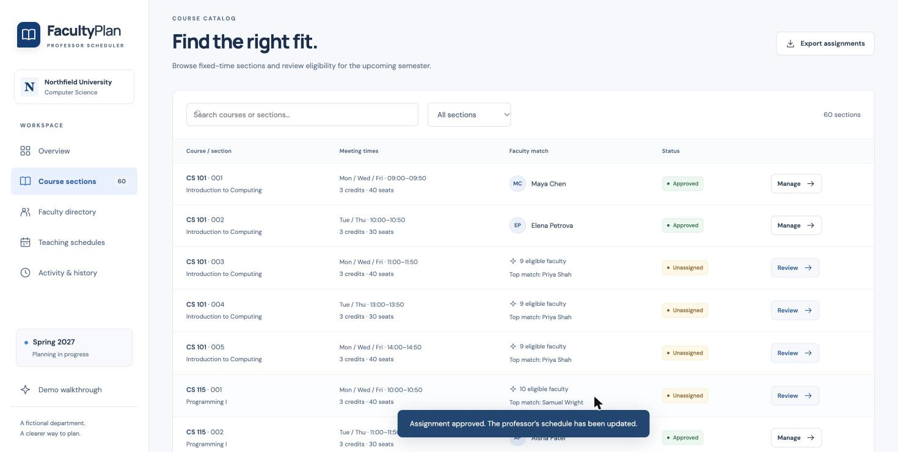
Quality and release review
11/7/2026
Storm Curtis
FacultyPlan is a local prototype. Professors submit teaching preferences; a scheduler reviews ranked recommendations and approves assignments.
Reviewed: branch playwright-multi-browser-setup, commit c306290. Re-checked against PR #3.
Goal: make setup and the core demo repeatable, and find the most useful repairs.
Method: a fresh clone and npm run check, the DEMO.md walkthrough by hand in Chrome, and scripted checks in Chromium, Firefox and WebKit.
Positive
Works as expected. A good practice to keep through future changes.
Low
A quality issue: cosmetic, docs or test noise. Adds up over time.
Medium
Frustrates some users, but doesn’t stop them finishing a core task.
Serious
Significantly slows some users on a core task, or blocks them. Fix soon.
Critical
Users can’t finish a core task, or data is wrong. Fix urgently. (None found.)
13 pass · 1 flaky · 2 fixed in PR #3
| Check | Result |
|---|---|
| Fresh clone, npm ci | Pass |
| npm run check | Pass (23/23) |
| Existing browser suite | Flaky (17/18) |
| DEMO.md steps 1–6 | Pass |
| Preference → approval | Pass |
| Lower-ranked needs a note | Pass |
| Reload keeps assignment | Pass |
| Activity & history | Pass |
| Check | Result |
|---|---|
| Invalid time window | Pass (blocked) |
| No eligible match | Pass |
| Hard-constraint protection | Pass |
| Keyboard navigation | Pass* |
| Width 375px | Pass |
| Width 320px | Fixed in PR #3 |
| Colorblind simulation | Pass |
| Text size | Fixed in PR #3 |
* Keyboard: dialogs, skip link and focus return work, but focus is lost after form errors. CSV export is covered by the automated suite only.
-Text size
-Review dialog
-Focus and tables
-What works well
Serious
Scheduler view · fixed in PR #3
564 / 579
text items on Course sections were smaller than 12px before PR #3
styles.css before: 64 fixed sizes at 8–11px. After PR #3: none, all in rem.
Was: Font sizes were fixed pixels, mostly 8–12px.
Now: Sizes are in rem, so the browser’s font setting works. PR #3 tests every screen at 200% text on a narrow screen, and an Android emulator at font scale 2.0 showed no clipping.
Keep: A minimum-size check on new screens. Real iOS Dynamic Type has not been verified yet.
Course sections table, before PR #3 · after PR #3
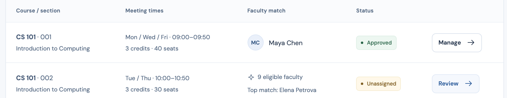
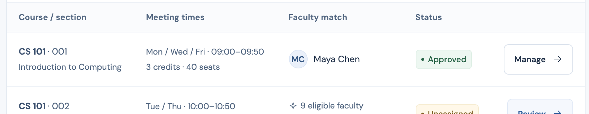
Serious
Scheduler view · fixed in PR #3
Before PR #3: Top: the Course sections table with fixed pixel sizes. Headers and second lines are small.
After PR #3: Bottom: the same table with sizes in rem. Headers and second lines are larger.
Medium
Scheduler view
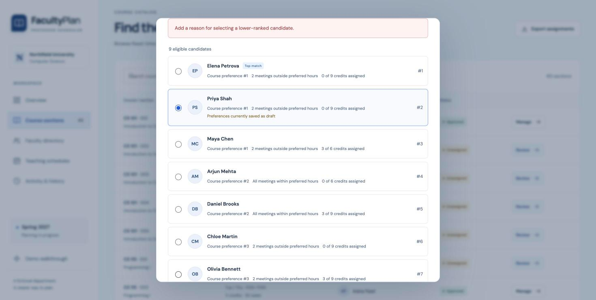
Cause: PR #3 labels the note “required for a lower-ranked candidate”, but the placeholder still reads “Optional context for this assignment…”. The field isn’t marked required, and the code never moves focus to it after the error.
Impact: Schedulers find out only after clicking Approve. The dialog then jumps to the top and focus lands on the page body, away from the note.
Suggestion: When a non-top candidate is selected, label the note “Required” and mark it required. On error, move focus to the note.
Low
Scheduler view
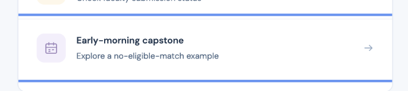
Focus ring clipped: On the “Needs your attention” rows, only the top and bottom edges of the outline show.
Low
Scheduler view · fixed in PR #3
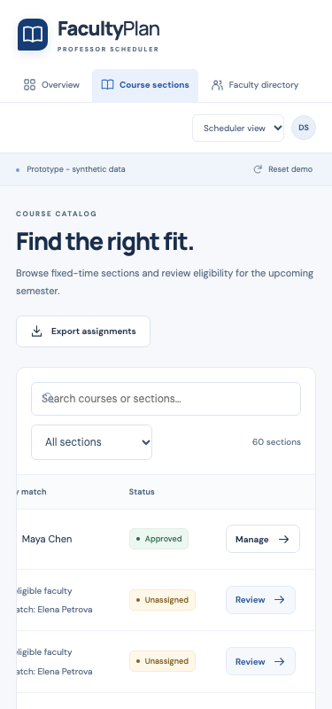
Hidden actions at 375px: Review and Manage are off-screen in the tables until you swipe sideways. Fixed in PR #3: tables become stacked cards on phones.
Positive
Scheduler view
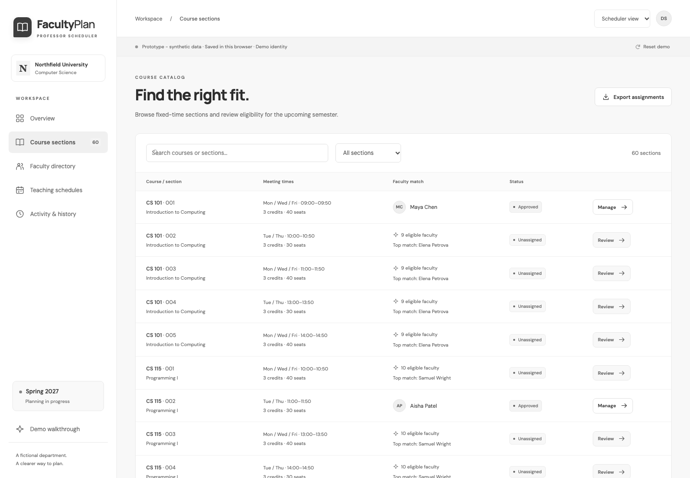
Cause: Every status badge has a text label (“Approved”, “Unassigned”), and the draft warning is written out, not just colored.
Impact: Under simulated deuteranopia, protanopia, tritanopia and full grayscale, every screen is still readable. The automated WCAG A/AA contrast scan also passes.
Keep: Never let color carry meaning on its own in future screens.
-Preferences form
-Narrow screens
-What works well
Medium
Professor view
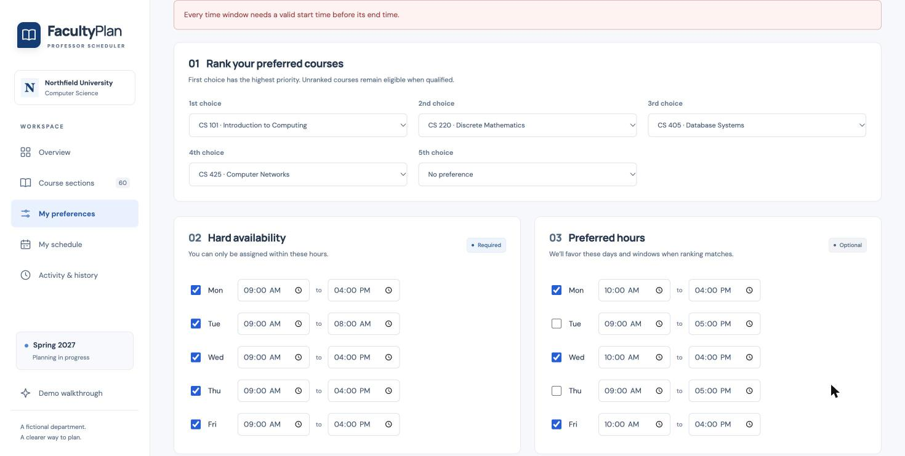
Cause: A time window that ends before it starts gets one generic banner at the top of the page. No field is highlighted or marked aria-invalid, and focus drops to the page body.
Impact: Professors have to hunt through ten time fields. Keyboard and screen-reader users lose their place. (The bad value is correctly not saved.)
Suggestion: Name the day in the message, mark and highlight that field, and move focus to it.
Low
Professor view · fixed in PR #3
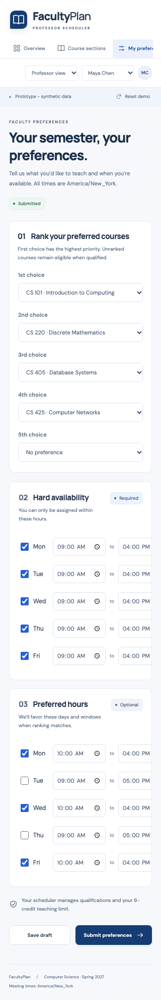
Was: At 320px wide, each time row is 321px wide inside a 282px panel set to overflow: hidden. The end-time fields are cut off on the right, so their clock icon is hidden and there is no way to scroll to it.
Impact before: The end time itself is still readable, but the field looks broken. On a small phone, or zoomed to 400% (the WCAG reflow test), it is a visible polish problem, not a blocker.
Now: PR #3 wraps the time rows on phones and adds an element-level clipping test. An Android emulator (412px, font scale 2.0) showed no clipping; that is wider than 320px, so the new test covers 320px.
Steps: 320px width → Professor view → My preferences. Fine at 375px.
Low
Professor view
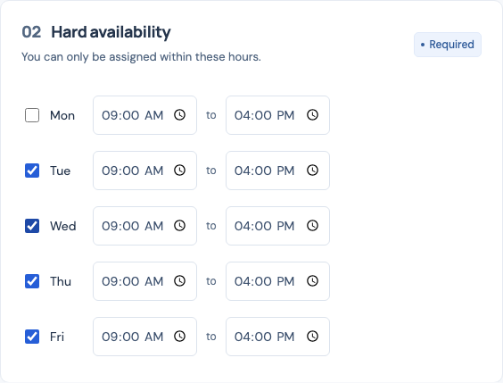
Unchecked days look editable: An unchecked availability day keeps its time fields looking active.
Positive
Professor view
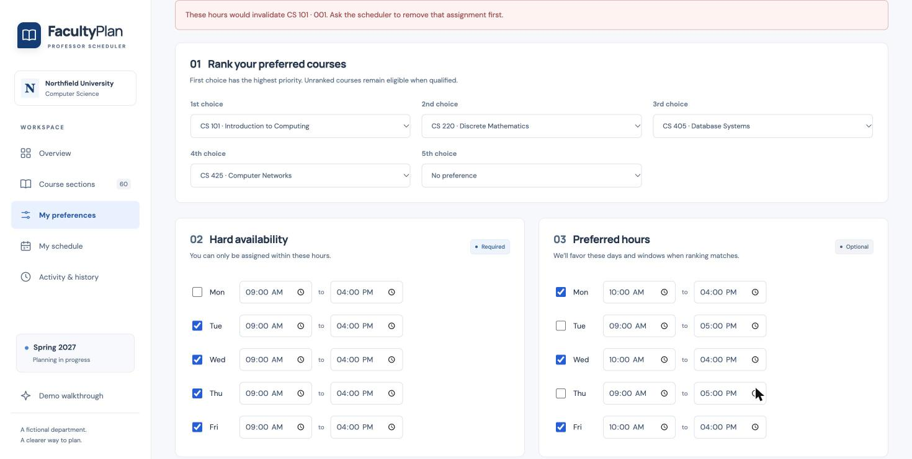
Cause: Every write rechecks the hard rules: availability, qualification, credit load and approval conflicts.
Impact: Removing Maya’s Monday is blocked with a clear reason. CS 499 · 005 explains why there’s no match and disables Approve. Two tabs racing to approve save exactly one assignment.
Keep: Carry the same recheck into the AWS version as database transactions.
-Flaky test
-README and reload
-The new test
Low
Whole app (tests)
84 / 84
checked runs saved exactly one assignment. The data is safe; the test is flaky.
Cause: The Firefox run of “competing review tabs cannot double-approve” fails in about half of full-suite runs. It can’t find the conflict message, even with a 15-second wait. It passes 40/40 when run alone.
Impact: A red suite with nothing actually broken. People learn to ignore failures.
Suggestion: Check the stored assignment count first, since that’s the real rule. Then check each tab’s message with expect().toPass().
Low
Whole app
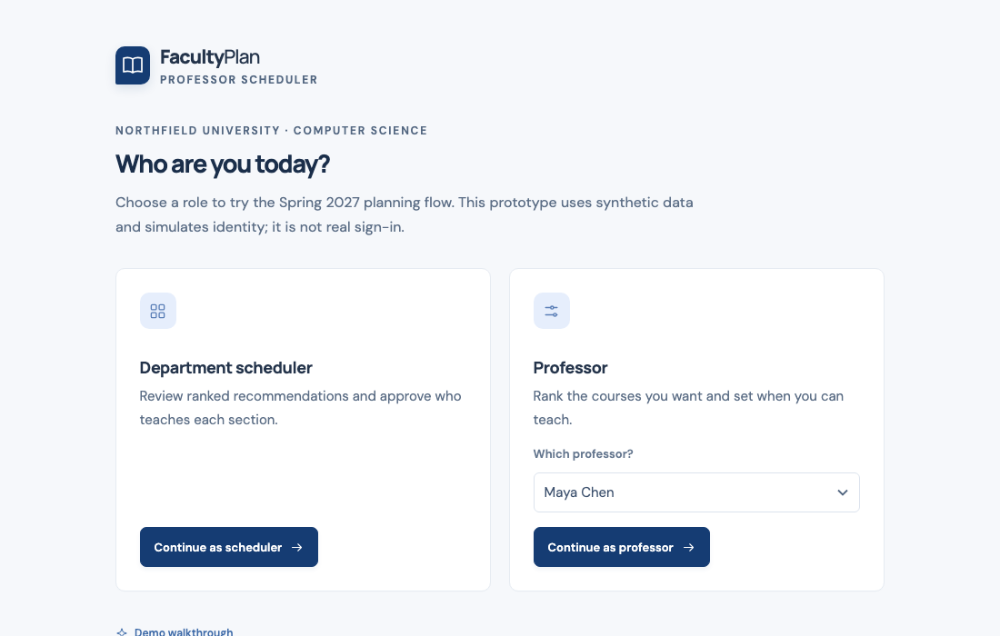
Reload resets the role: The app always reopened in Scheduler view. Fixed in PR #3: a first-visit role picker remembers the role.
README is out of date: It says local tests use Microsoft Edge, but this branch runs bundled Chromium, Firefox and WebKit.
The suite tested duplicate course ranks, but not a time window that ends before it starts.
Test: “availability window ending before it starts is rejected and not saved”, in tests/browser/journey.spec.ts.
npx playwright test -g "availability window ending"
✓ chromium (1.1s)
✓ webkit (1.4s)
✓ firefox (1.7s)
3 passed (3.3s)
It can fail: with the start-before-end rule removed from src/matching.ts, it fails. The error message never appears.
PR #3 adds: mobile.spec.ts (Pixel 7 and iPhone 14: clipping, 44px targets, 200% text) and an Android font-scale test. On the PR branch’s first full run, 29 of 35 tests passed and 6 failed (a11y, journey, validation, 200% text); all 6 passed on rerun. Cause not found.
Microsoft Edge: the task notes say local tests use Edge, but this branch’s config no longer does. Nothing ran in Edge.
Narrow width in real Chrome: the window wouldn’t resize, so 320px and 375px ran in Playwright Chromium. An Android emulator later covered the scheduler views only; real iOS Dynamic Type is unverified.
CSV export by hand: not clicked, because it downloads a file. The existing automated test covers it.
Screen reader: no VoiceOver pass. Labels and focus were only checked by script.
Firefox flake: the root cause wasn’t found within the time box.
A 14px minimum, in rem units so the browser’s font setting works.
PR #3 adds an element-level clipping test. Keep it running.
Chrome DevTools › Rendering › Emulate vision deficiencies, on every new screen.
Name the field, set aria-invalid, and move focus to the problem.
Tab order, a visible focus ring, and dialog focus on open, close and error.
A VoiceOver pass, and touch targets of at least 44px (24px is the WCAG floor).
Ran the fresh-clone setup, npm run check and the browser suite.
Did the DEMO.md walkthrough and edge cases in Chrome and took the screenshots. Scripted the narrow-width, text-size, colorblind and race checks in Playwright.
Investigated the Firefox flake, wrote up the issues and severity ratings, and wrote and mutation-checked the new browser test.
Wrote Storm/QA-REPORT.md, and all of this deck’s text and slide layouts.
The task card and the request to do it.
The slide template and severity scale, from an earlier UX review.
First-impressions notes (source of “The text is tiny”).
Direction to add Chrome screenshots and accessibility checks.
The findings come from real test runs and screenshots, but no person has re-run them independently yet. Treat them as a starting point to confirm.